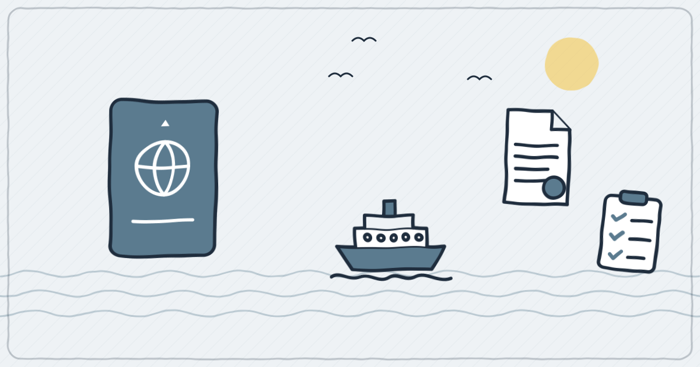

Passport for an Alaska Cruise From Vancouver? NEXUS and Kids

Bring a valid passport for everyone. An Alaska cruise from Vancouver clears US preclearance at Canada Place before boarding, so US entry rules apply. NEXUS or a child's birth certificate can work in narrow cases, but lines set stricter lists and only a passport gets you home from Alaska by any route.
Yes. For an Alaska cruise from Vancouver, bring a valid passport for every person in the party, Canadian or American, adult or child. The reason is the border: you enter the United States at Canada Place before you board, through US preclearance, so the documents that count are the ones US Customs accepts, filtered by whatever stricter list your cruise line applies. Other documents can work in narrow cases, which this note goes through, but a passport is the only one that works in every case, including the one where you have to fly home from Juneau.
Why a cruise from Vancouver needs US border documents
Every Alaska port on the itinerary is in the United States. Rather than clear immigration in Ketchikan with two thousand other passengers, the ship uses US preclearance inside the Vancouver terminal: you are inspected by US Customs and Border Protection officers before boarding and step ashore in Alaska already admitted. It is faster than an airport, but it is a real border crossing with real consequences. No acceptable document, no boarding, and the line treats that as your cancellation with no refund.
The same thing happens on cruises that end in Vancouver: you clear Canadian customs at Canada Place on the way off, where a passport is the quickest proof you belong.
Which documents US Customs accepts for a sea arrival
US rules for arrival by sea from Canada are broader than most people assume. The table is for the border; your cruise line's own list, in the next section, is what decides whether you board.
| Document | Canadian citizen | US citizen | Catch |
|---|---|---|---|
| Passport book | Accepted | Accepted | None; accepted by every line |
| NEXUS card | Accepted | Accepted | Several lines do not list it; useless once expired |
| Passport card | Not issued to Canadians | Accepted for land and sea arrival | Not valid for a flight, so no good if you must fly home |
| Enhanced driver's licence (BC, ON, QC, MB) | Accepted at land and sea crossings | Accepted (some US states) | Most cruise lines refuse it |
| Birth certificate plus photo ID | Children 15 and under only | Closed-loop cruises only | Vancouver departures are not closed-loop |
| Permanent resident card alone | Not sufficient | Not applicable | Must be paired with the passport of your citizenship |
What "closed-loop" means and why it does not apply here
You will see advice online that an Alaska cruise needs no passport. That advice is about US citizens on round trips from Seattle: a cruise that starts and ends at the same US port is "closed-loop", and US citizens can sail it on a birth certificate and government photo ID. Two things break it for Vancouver: the departure is a foreign port, and the rule never covered Canadians in the first place. Americans joining in Vancouver need a passport book, or a passport card if they drove or took the train up, because a passport card is no use at an airport.
What the cruise lines actually require
The line's travel-documents page is the one that matters at check-in, and lines are allowed to be stricter than the border.
Line by line, in practice
- Every major line accepts a passport book, valid for the dates of the cruise. Some ask for six months' validity beyond the return date even though the US does not require it from Canadians.
- Most lines accept NEXUS from Canadian citizens for Alaska sailings; a few do not list it. If yours does not, it will not be accepted at the terminal regardless of what the border would allow.
- Birth certificates for Canadian children are accepted by some lines and refused by others. Disney and the premium lines tend to require passports for all ages.
- Enhanced driver's licences are refused by most lines, even though the border accepts them.
When to check, and check again
Check the page for your exact sailing after booking and again a month before, because wording changes. If you book through a consultant, ask them to confirm it in writing. The health questionnaire and online check-in will ask for your document type and number, which is the moment to find out you have the wrong one, not at the pier.
The reason everyone recommends the passport anyway
Imagine the three things that go wrong on an Alaska cruise: you miss the ship in Juneau, someone is taken ill and has to leave in Ketchikan, or a mechanical problem ends the cruise early. In every case you are getting home from Alaska by air, almost always through Seattle. A NEXUS card, a birth certificate or a passport card does not get you on that flight, and neither does an enhanced licence. A passport does. That is the whole argument, and it is why the border officers, the lines and every consultant say the same thing.
Kids, grandparents and blended families
Each child needs their own document; nobody travels on a parent's passport. Beyond that:
- A Canadian child 15 or under can enter the US by sea on a birth certificate, but only if your line accepts it, and it still leaves the flight-home gap.
- A child travelling without both parents, which includes a trip with grandparents or one parent after a separation, should carry a consent letter signed by the absent parent or parents. The Government of Canada recommends it, and border officers in both directions ask for it more often than people expect.
- Blended families with different surnames should carry something linking the adults to the children, such as the long-form birth certificate, to answer the question before it is asked.
Permanent residents, dual citizens and visitors
Permanent residents of Canada are not covered by the rules for Canadian citizens. They need the passport of their country of citizenship plus their PR card, and depending on that citizenship, a US visa or an approved ESTA before sailing. Sort this at booking, not at the terminal; a visa appointment can take months. Canadian citizens, by contrast, need no ESTA for a cruise at all, as explained in do Canadians need an ESTA for a cruise from a US port.
Dual Canadian-US citizens should present the US passport to US preclearance and the Canadian one coming home. Visitors from other countries who are joining the cruise in Vancouver need to satisfy both Canada's entry rules to get to Vancouver and the US rules at preclearance, which usually means a passport plus an ESTA or visa for the US and an eTA or visa for Canada.
Renewal timing, because Alaska season is passport season
Canadian passport queues lengthen from March to June, exactly when people realise their Alaska documents are out of date. If you need a renewal:
- Check every passport in the group the week you book, not the month you sail.
- Apply straight away and allow extra time in spring; pay for express service if the sailing is inside eight weeks.
- Book with a refundable deposit if a renewal is still in progress, so a delay does not cost you the fare.
- Enter the new passport details in online check-in as soon as it arrives, because the line will have your old number on file.
The Alaska from Vancouver budget treats a renewal as a real line item for the same reason: it is the one cost that can cancel the trip if ignored.
Want this checked for your own sailing? A licensed cruise consultant can price it up and answer questions for free, with no obligation.
Ask a cruise expert →Coming home through Canada Place
At the end of the cruise you clear Canadian customs in the terminal. Have the passport out, receipts for anything bought in Alaska ready for the declaration, and the duty-free limits in mind if you shopped. Canadians get through in minutes; the queue you want to avoid is the one for people hunting through bags for a birth certificate.
Still wondering?
Can I use my NEXUS card instead of a passport for an Alaska cruise?
US rules accept a NEXUS card from a Canadian citizen arriving by sea, and preclearance at Canada Place is a sea arrival. The catch is that not every cruise line lists NEXUS as acceptable, and it will not get you on a flight home from Alaska if you have to leave the ship. Check your line, and carry the passport anyway.
Do kids need a passport for an Alaska cruise from Vancouver?
Under US rules a Canadian child aged 15 or under can enter by sea with a birth certificate, and some lines accept that. A passport is still the better choice because it covers a flight home and because a few lines require one for every passenger. A child travelling without both parents should also carry a signed consent letter.
Do Americans need a passport to cruise to Alaska from Vancouver?
Yes. The closed-loop exception that lets US citizens cruise on a birth certificate and photo ID only applies to sailings that start and end at the same US port. A Vancouver departure is a foreign port, so US citizens need a passport book, or at minimum a passport card if they arrive in Vancouver by land or sea rather than by air.